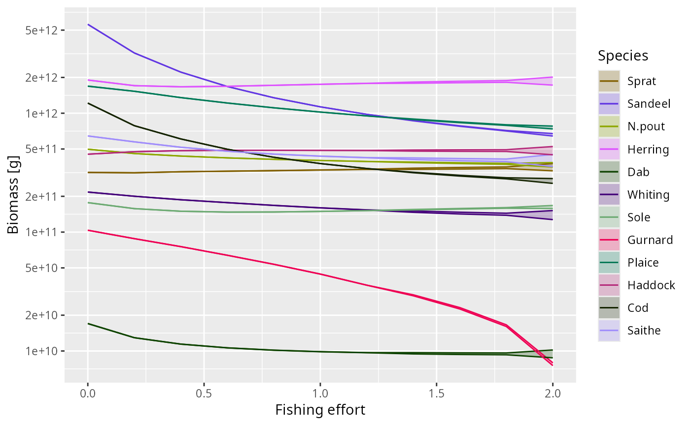

![[Experimental]](figures/lifecycle-experimental.svg)
Sweeps the fishing effort over a range of values and, for each value, runs the full dynamics to their attractor and records the long-term range of a summary quantity (biomass by default). The result is a bifurcation diagram with fishing effort on the x-axis.
For each effort value the attractor is found in two stages. First
projectToSteady() runs the dynamics until they settle, stopping early once
it detects a stable steady state or a limit cycle and reporting which via its
"convergence" attribute. Then the settled state is projected forward once
more with project() over a short sampling window — one full period for a
limit cycle, or a few years otherwise — and the minimum and maximum of the
chosen quantity over that window are taken as the attractor envelope.
For a stable steady state the minimum and maximum coincide and the species is
drawn as a single line; once the dynamics settle onto a limit cycle the two
separate and the species is drawn as a shaded band between them. The onset of
the band therefore marks the Hopf bifurcation (see
vignette("dynamic_stability")).
By default the sweep uses continuation: the projection at each effort value
starts from the attractor reached at the previous value rather than from the
original state. This shortens the transient and keeps the sweep on a single
branch of the attractor. Because it follows one branch, the diagram can look
different for an increasing versus a decreasing effort sequence if the model
has coexisting attractors (hysteresis); pass a decreasing effort vector to
trace the other direction.
Usage
plotBifurcation(
params,
effort = seq(0, 2, length.out = 21),
species = NULL,
value = c("biomass", "yield", "ssb"),
t_max = 100,
t_sample = NULL,
t_sample_default = 10,
t_save = 0.25,
tol = 0.01,
amplitude_tol = 0.01,
extinction_threshold = 1e-06,
continuation = TRUE,
return_data = FALSE,
progress_bar = TRUE,
ytrans = "log10"
)Arguments
- params
A MizerParams object.
- effort
A numeric vector of fishing effort values for the x-axis. The same effort is applied to every gear (as in
project(effort = value)). Defaultseq(0, 2, length.out = 21).- species
The species to include. By default all target species. A vector of species names or indices, as for other mizer plotting functions.
- value
The quantity for the y-axis, one of
"biomass"(default),"yield"or"ssb", computed withgetBiomass(),getYield()orgetSSB()respectively.- t_max
The maximum number of years to run the settling stage (
projectToSteady()) at each effort value.- t_sample
The length in years of the window over which the settled attractor is sampled to measure the envelope. If
NULL(default) it is chosen automatically: one full period for a detected limit cycle, ort_sample_defaultyears otherwise.- t_sample_default
The sampling window used when no limit-cycle period is available (a stable or non-converged run). Default
10.- t_save
The interval at which the sampling window is saved, controlling how finely the cycle envelope is resolved. Default
0.25.- tol
Convergence tolerance for the settling stage, passed to
projectToSteady(). Tighter (smaller) values settle the stable branch more fully, giving cleaner single lines below the bifurcation at the cost of longer runs. Default0.01.- amplitude_tol
The minimum relative biomass amplitude for a run to be classified as a limit cycle, passed to
projectToSteady(). Default0.01.- extinction_threshold
The relative reproduction collapse below which a species is treated as extinct, passed to
projectToSteady(). Default1e-6.- continuation
If
TRUE(default) each settling run warm-starts from the attractor of the previous effort value.- return_data
If
TRUEthe data frame underlying the plot is returned instead of the plot. DefaultFALSE.- progress_bar
If
TRUE(default) a text progress bar is shown while the effort values are swept.- ytrans
Transformation for the y-axis,
"log10"(default) or"identity".
Value
A ggplot2 object, or a data frame with columns Effort, Species,
ymin, ymax and type (the attractor type reported by
projectToSteady()) if return_data = TRUE.
See also
getStability(), projectToSteady(), plotBiomass()
Other plotting functions:
addPlot(),
animate(),
plot,
plot2(),
plotBiomass(),
plotCDF(),
plotCDF2(),
plotDiet(),
plotFMort(),
plotFeedingLevel(),
plotGrowthCurves(),
plotMizerParams,
plotMizerSim,
plotPredMort(),
plotRelative(),
plotSpectra(),
plotSpectra2(),
plotSpectraRelative(),
plotYield(),
plotYieldGear(),
plotting_functions
Examples
# \donttest{
plotBifurcation(NS_params, effort = seq(0, 2, length.out = 11))
#>
|
| | 0%
|
|====== | 9%
|
|============= | 18%
|
|=================== | 27%
|
|========================= | 36%
|
|================================ | 45%
|
|====================================== | 55%
|
|============================================= | 64%
|
|=================================================== | 73%
|
|========================================================= | 82%
|
|================================================================ | 91%
|
|======================================================================| 100%

# }